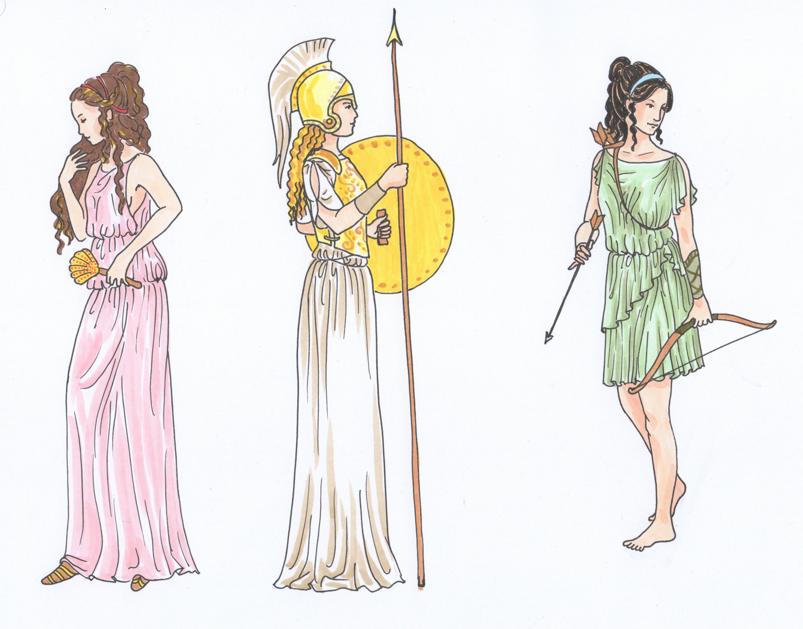
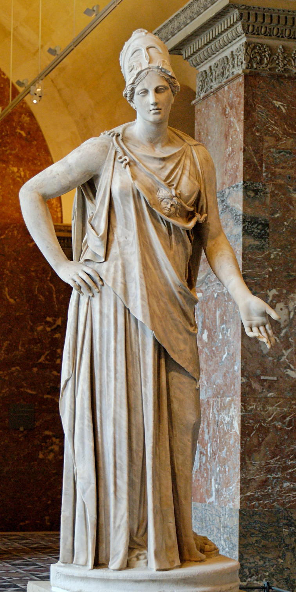
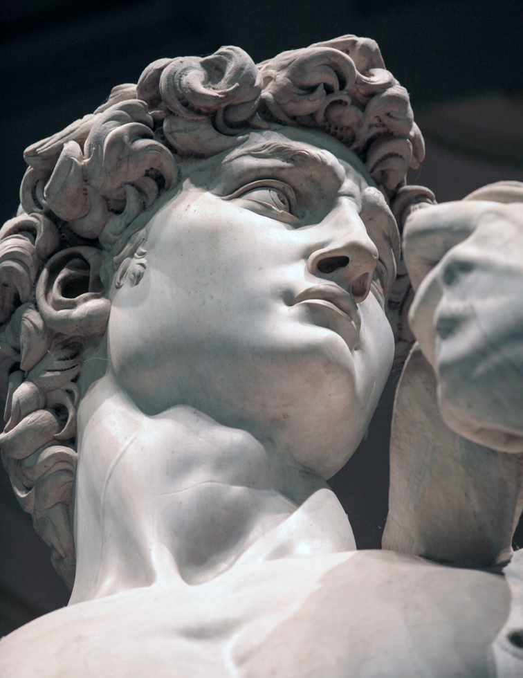
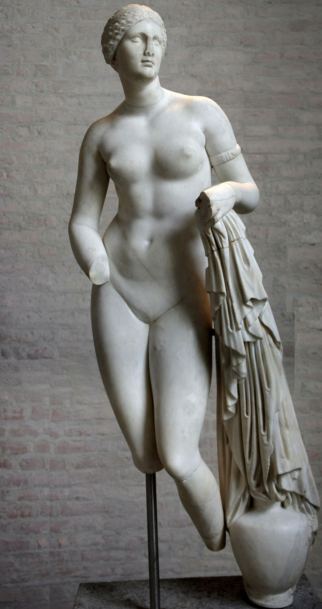
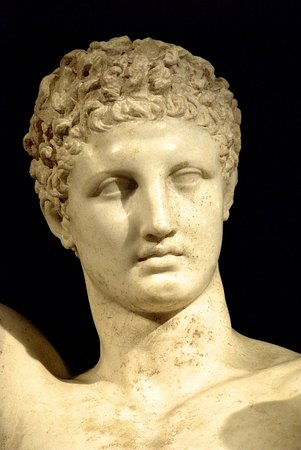
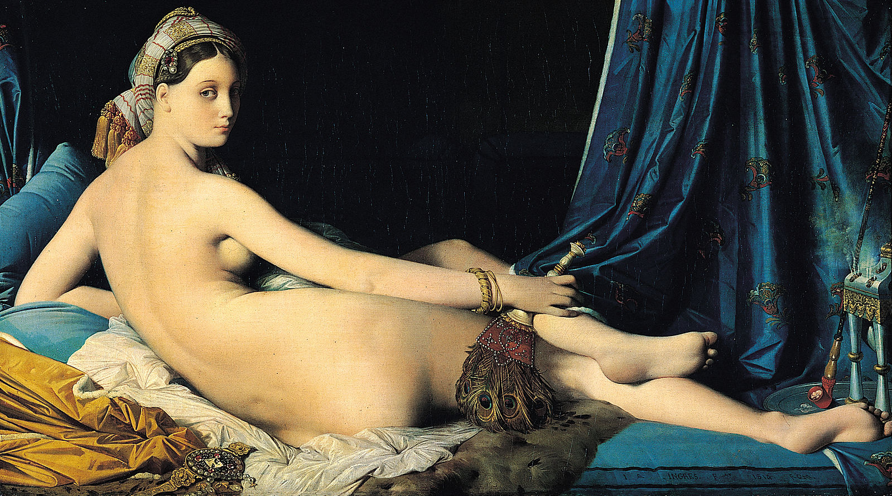
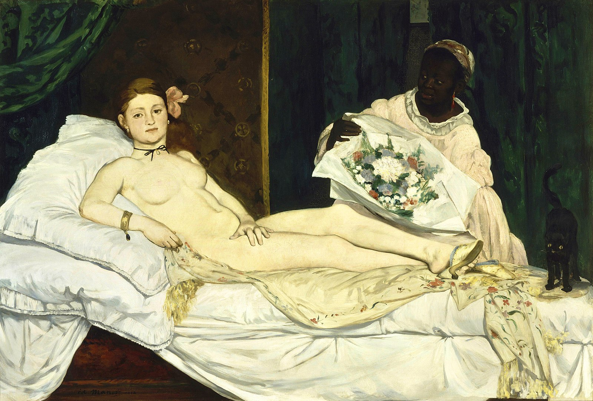
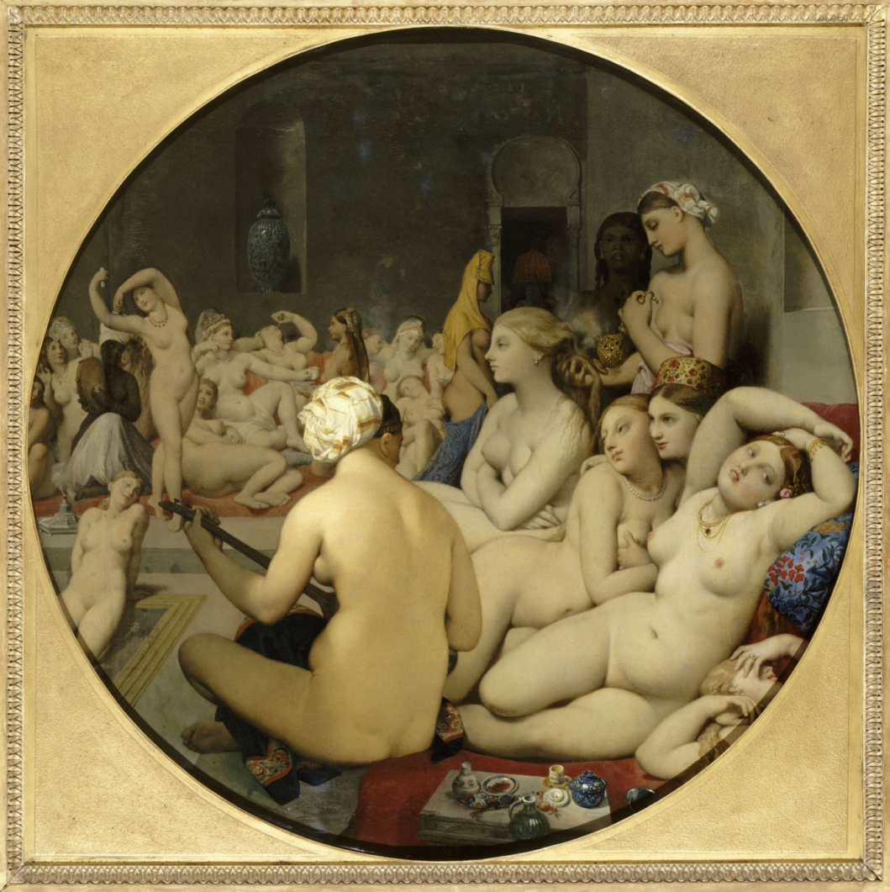
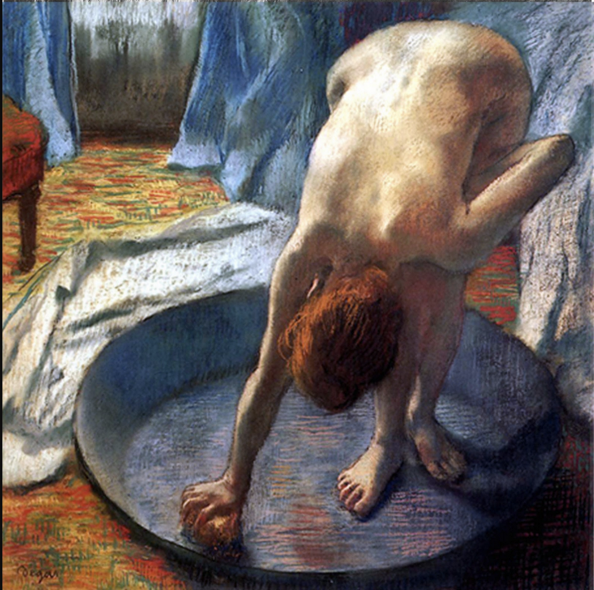

The three virgin Goddesses: Hestia, Athena, and Artemis. Drawing credit to the talented artist 455992
French painting in the mid-nineteenth century is characterized by the critical transformation from the academic, neoclassical style to more innovative and progressive types. The idealized, nude goddess of the neoclassical tradition was gradually replaced by modern varieties in which avant-garde painters chose the representation of the female nude as a front for their challenge to the accepted standards of the Academy.
Mattei Athena at Louvre, an example of neoclassical tradition in the depiction of women.
In French academic art, female nudity was only permissible within the context of a recognizable narrative in an imaginary, mythological or biblical landscape. However, forward-thinking artists portray women in a naturalistic form, engaged in everyday activities, undermining established clichés of femininity and eliminating the voyeurism associated with traditional nudes of the period.
By analyzing the evolving relationship between the fine art of the female nude, its reception, and political movements in nineteenth-century France, we will explore how realist and impressionist representations diverged from the ancient Greek ideal. Painters shifted attention away from the female body as an object of erotic desire and onto artistic concerns of technique and composition. This transformation played an important role in the emergence of modernism and abstraction of the twentieth century.

Mattei Athena at Louvre, an example of neoclassical tradition in the depiction of women.
Because of the widely accepted values of patriarchy in most societies from the past, women generally had less rights and were seen as inferior to men. Such viewpoints were widely reflected in both the literature and art forms of ancient societies. Therefore, it was reasonable to see that many early depictions of the female form frequently appealed to more obscene senses rather than artistic ones. As women began to receive more political rights and began to be seen as more equal to men within the society, the literature and art works also reflected such trends. In order to understand how female nudity was gradually accepted as art within the nineteenth century in French society, we will first examine the culture and motivations behind female nudity in Greek and, briefly, Italian art (the main cultures that motivated nudist art movements in France).
This history is key for establishing the context behind certain norms surrounding female nudity and contributes to a discussion of the development of the artistic and the obscene in depictions of the female nude. We will focus on the shifting norms regarding art and obscenity in these different societies when processing female nudity in art, and the impact of avant-garde painters in the 19th century and more modern times in broadening the range of acceptable aesthetic emphases and associations of the female form.
The role of the female nude form in art is special because its rendering involves a balancing act between art and obscenity. This is the say that once an artist begins a depiction of the nude female form, the handling of that nudity intrinsically thrusts the artist onto a tightrope between artistic and pornographic depiction. Because of this, a set of norms surrounding the “appropriate” depiction of female nudity is often observed in cultures such as those of the French or of ancient Greece. In a sense, these norms are a way to signal to viewers and to improve their confidence that they are viewing an aesthetic, artistic depiction of the female form rather than one aimed simply at gratifying sexual desires or at depicting erotic qualities within that form. As Kenneth Clark remarks:
"The female nude marks both the internal limit of art and the external limit of obscenity… It is the internal structural link that holds art and obscenity and an entire system of meaning together. And whilst the female nude can behave well, it involves a risk and threatens to destabilize the very foundations of our sense of order."
What Clark describes here in pairing artistic depiction and the obscene appears to be a gradient between “art” and “non-art”. He deepens the meaning of this metaphor by considering that art consists of the presentation and representation of subjects, while the idea of the obscene derives etymologically from the Latin “scena”. This means that obscenity describes what exists beyond art. In this way, the depiction of the female form is contentious because it holds the potential for artistic depiction, but also holds an equal potential for erotic depiction that would completely subvert artistic purposes. But it is also the existence of such a subject — the female nude — that gives purpose to what art actually is by defining what art is not, and this is what Clark means when he describes the female nude as an “internal structural link” that holds art and obscenity in a system of meaning.
Primarily, a discussion regarding the historical development of norms surrounding the depiction of female nudity is important to characterizing its eventual prominence as an artistic form. It is essential to understand the history and norms of nudity within Greek art in order to grasp the struggles French progressive artists faced when trying to portray female nudity and how these artists were later able to overcome those struggles — eventually creating a paradigm shift in the acceptance of female nudity as art rather than a portrayal of sexuality.
Pre-Greek cultures, usually those near the east, saw nudity as something shameful or degrading. However, the development of Athenian democracy and Western humanism around the fifth century allowed the Greeks to become the first society to first portray and appreciate nudity as an art form. Surprisingly, for the Greeks, nudity as an art form became a means of differentiation between themselves as a noble civilization and other “uncivilized barbarians”, using nudity as a display of power and liberty by inspiring rather than inviting lustful glances.
Nudity as a form of power and liberty only applied to nude portrayals of male bodies. In ancient Greece, men competed without clothes in athletic competitions at religious festivals where the human body, masculine nudity, was associated with “triumph, glory, and moral excellence”. Thus, men’s bodies were the norm and standard of perfection, beauty-a symbol of athleticism, completely desexualized. It was only natural to see masculine nudity in paintings because men’s bodies were revealed all the time within society. Consequently, artists did not need to excuse male nudity, portraying males as nude in any action or context, regardless of whether man would have been required to be undressed in reality. In some respect, the naked image of men was worshipped, often displayed in sanctuaries and the form in which man gods and heroes of Greek religion were displayed in.

Michaelangelo’s David embodying this masculinity. Picture Credit
Incontrast, female nudity was taboo and extremely frowned upon by the Greek culture. By the mid-fourth century BC when Praxiteles carved the first image of a goddess naked (the Knidian Aphrodite), the sculpture became the center of great controversy due to the fact that even partial nudity was rare in Greek art before the late fifth century BC: the only times female body parts were revealed was when women were victims of violence or represented as prostitutes.
Thus, the nude sculpture of Aphrodite needed to be censored. For example, the genitals were not represented, non-existent. Specifically, Greek textual records show that female sexuality was rejected and there was a clear revulsion toward female genitalia when looking at the negative connotations depicted in the text towards menstruation and child birth. Females were even considered as “polluting and dangerous to men”, and there were even taboos associated with touching menstruating women, or women who had recently given birth; even nursing milk was considered as pollution to men if it happened to touch their skin.

The Knidian Aphrodite.Picture Source
Additionally, female genitalia was referred to as “aidoia” or shameful parts. This was because women at the time had a relatively low social rank, only seemed as slightly higher than the status of a slave. Clearly, there was no way the Greek society would have been able to readily accept any form of female nudity as a form of art rather than as something degrading or of sexual nature.
In addition to censorship of the female genitalia, Praxiteles also needed some sort of excuse for portraying the Knidian Aphrodite in nude since only men could be portrayed as nude without question. Thus, Praxiteles created Aphrodite in a pose with her head turned to the side and hand covering the body with props of a water jar and bath towel, to suggest that the goddess just stepped out of her bath and had been caught in a momentary state of complete surprise. Such a depiction creates an image of voyeur, viewing Aphrodite’s nakedness as a forbidden pleasure for viewers. Yet, the creation of such a work of art was possible because women, especially Aphrodite, were still respected in the realm of religion. Because Aphrodite is the Goddess of love whose image was found in many places, she was accepted as a figure of respect to the people of the time, a figure to which families would often give rich offerings to or pay homage.

Praxiteles. Picture Source: Archeological Museum of Olympia
The creation of the Knidian Aphrodite and other successive nude portrayals of goddesses became the springboard for which endless derivations and replicas of female nudity could be later portrayed. Though females were not commonly depicted as nude in Greek pottery after the birth of the nude Knidian Aphrodite, females were still portrayed as objects or motivations of pleasure for male viewers from time to time. Pottery began including images of females bathing in nude or of other sexual nature. Eventually, such representations on pottery became a bit more commonplace and began to be used as gifts for weddings, expressing luck or wishes in the newly-wed couples’ efforts in reproduction.
After Alexander the Great came into power in Greece and was able to achieve massive conquests during the Hellenistic Period, women were slowly able to gain more power which was reflected within the Greek art of that period. In terms of empowerment, women could now choose who to marry and also receive education. As a result, women were no longer solely represented in art as victims of violence or as prostitutes and female nudity in art was beginning to gain traction. However, the fall of Rome and rise of Christianity in the fourth century decreased the portrayal of nudity in western art due to the change in values toward chastity and celibacy of artists and patrons until around 1300CE. When nudity did appear, it was through the context of religious art such as Adam and Eve and/or to portray ideas of shame: Adam and Eve were the first man and woman to discover their nakedness because of sin through which they suffer shame and punishment.
Arguably, the lack of Christian influences in Italy coupled with a period of peace through the Peace of Lodi from 1454 to 1494, helped create a period in which nude art could once again develop. Significantly, Botticelli’s Birth of Venus in Italy became an important painting which helped spark renewed interest in depicting nude figures and revive classical nudity. Birth of Venus was the first full-scale painting based on a classical theme while portraying the female nude as its principle subject.
Birth of Venus by Sandro Botticelli
In Birth of Venus, the central goddess of love represents “divine love” and was not created through any religious motivations. Here, Venus appears to be born of sea form and lies on top of the grand scallop shell, revealing everything. The Pompeii Venus shows no sign of modesty and her posture reflects one that conveys submissiveness by lying down backwards as if in a state of vulnerability, called the reclining nude. The reclining nude position soon becomes a trend that other Italians follow, creating a stark contrast with male nudes, who are more often as active, erect, and aggressive.
The Knidian Aphrodite and Birth of Venus play a strong role in the acceptance of nudity in French art. In 19th century, the style supported by the French society was neoclassicism or a revival of a classical art. Similar to how Athenian democracy helped develop nudity as an art form in ancient Greece, the French Revolution also helped promulgate the acceptance of nudity — female nudity — within the French society in alignment with the transition of the French government from a monarchy to a democracy. The sculptural nude figure — inseparable from ancient Greek art — was an incredibly popular subject due to prevalence of ancient roman copies and the celebration of these by renaissance artists.
Thus, female nude became increasingly popular subject — surpassing its male counterpart in order to depict the ideals of liberty and equality from the French Revolution. During this time, French artistic environment was defined by the dual between the modern and the traditional modes and the female nude was perhaps the most contested subject of all. In both antiquity and in the earlier half of the 19th century, female nudity walked a fine line between the beautiful and the obscene, requiring a narrative as justification for its existence just as in the Greek society.
Initially, the female nudity was portrayed through reference to Greek and Roman mythology in a classical style. In order to challenge the regular norms, these representations consisted of more dramatic poses than their Greek counterparts while removing naked figures from the context of everyday life. Before the late 1800s, though, the study and art of nude models was restricted to the most prestigious academies or studios of established artists. One of the most significant professional art societies behind the art in France were the Royal Academies of Art in France established 1768.
They ran schools of instruction, held annual or semi-annual exhibitions, and provided venues where artists could display their work and cultivate critical notice. From the late eighteenth century, as dominated by artists like Jacques Louis David in France, such institutions had a virtual monopoly on public taste and official patronage. Academic art, whose standard was ancient classical art, the European tradition, and historical subjects rendered predominantly in painting and sculpture, retained sway through the nineteenth century, and was sustained by its presence at the world’s fairs that proliferated in the West from the 1850s.
As the acceptance and esteem for classical culture in art grew increasingly important, so too did the prestige of nude art. The academies of the period directed young artists to develop their skills by drawing the naked form of ancient sculpture as well as live models, and many successful artists continued such exercises long after their student days. Nudes were ubiquitous in the ambitious history paintings of the period as well as sculpture and decorative schemes. Nude figures began to represent “ideal beauty in art”. Proponents of the Neoclassical style made nudes closely based on ancient examples, like Canova’s Perseus, which repeats the pose and body type of the widely admired Apollo Belvedere.
Yet, one way artists could portray nudity without relation to religion or classicism would be through orientalism, which is a term used by art historians to describe depictions of other races and cultures. Orientalism depicts Eastern civilizations as unchanging and underdeveloped cultures. One early example of a nude Orient painting that heighted eroticism is Ingres’ La Grande Odalisque and The Turkish Bath.

Jean-Auguste Dominique Ingres, La Grande Odalisque, 1814
Like the nude depiction of Pompeii Venus in Italy, Ingres’ painting also portrays the subject as reclining female nude, presenting sexuality more frankly without the traditional trappings of usual Greek nude paintings. Even though the painting is quite explicitly nude, it was inoffensive to the French public because Ingres transposed the painting to an Orientalist setting and also significantly elongated the subject’s torso in order to depict a more fictional character rather than a real nude woman.
Jean-Léon Gérôme, The Slave Market, 1866
Jean-Léon Gérôme’s The Slave Market, 1866 also presents an erotic image by portraying the setting of the picture in Islamic Egypt. In the picture, Gérôme portrays a woman as a commodity for sale, implying European superiority since such treatment of women was forbidden in Western culture. Such examples of Orientalism became so commonplace that such stereotypes began to be accepted as self-evident facts and enforcing the idea that other cultures were uncivilized and barbaric, going back to the notion that culture with nude art are actually superior than those without. Essentially Orientalism was acceptable by the French society at the time because it went along with Napoleon’s conquests and European imperialism at the time, eliminating humanistic values in order to subjugate the subjects or other cultures both physically and within works of art.
Near the mid and latter end of the 19th century, portrayal of female nudity become more provocative and not limited to mythological or oriental subjects. One example who came directly from the Academy is Thomas Couture. As the bourgeoisie began to rise and gain power against absolute monarchy near the mid nineteenth century, Couture created a his most famous work to reflect such changes in French society in 1847, The Romans of Decadence. The painting became one of the most popular Salon paintings in the entire nineteenth Century.
The Decadence of the Romans, by Thomas Couture, 1847. Musée d’Orsay
The title, which depicts the idea of self-indulgence, actually allows nineteenth century bourgeois viewers to obtain a sense of moral righteousness by relating to a scene in which can be considered a reflection of urban life during the Industrial Revolution. While reflecting the ideals and tastes of upper middle class sponsors, the painting shows “impressive power” by “forcefully [placing] the viewer within a scene or event.” Though the characters are clearly participating in an orgy, they are all so attractive and the painting itself composed so much like Leonardo da Vinci’s Last Supper that the image functions more as a soft-porn piece rather than having any derogatory connotations. Yet, the hypocrisy of trying to display a demoralizing action as more of a work of art brought along many accusations that the Academy itself had become decadent and artificial, resulting in many artists who began to rebel against the Academic standards.
Rather than objectifying women, there were also trends of trying to portray female nudity as more of an art form. One notable painter who was able to drastically challenge the Academic standards in the nineteenth century is Edouard Manet. Manet painted unaccepted scenes of Paris, “wanting to keep one foot in museums and the other in the modernity of the streets”, enabling him to become a pivotal figure within the avant-garde movement by closing the gap between the traditional Academic art and the real-life of modern Parisans.
One example of his paintings is Olympia (1865) in which was such a radical change from the Academic standards that the painting provoked almost universal criticism from society. Olympia depicts a nude woman reclining on her bed with a clothed black servant bringing her flowers on the side in a much clearer and vivid manner than other paintings of the time, somewhat like a real-life snapshot. TJ Clark (a British Art Historian), however, asserts that Olympia refuses “the permissible signs of female sexuality”. For Clark, the nudity depicted in Olympia is a sign of class:
By nakedness I mean those signs — that broken, interminable circuit — which say that we are nowhere but in a body, constructed by it, by the way it incorporates the signs of other people. (Nudity, on the other hand, is a set of signs for the belief that the body is ours, a great generality in which we make our own, or leave in art the abstract.)

Olympia, Edouard Manet, 1865
.
In other words, Clark is stating that the nudity portrayed in Olympia goes beyond the physical representation of a woman’s body and rather embodies the historical, social, and cultural existence of oneself.
Moreover, the main motivations behind Olympia do not come from a wish to portray a lower class woman as a prostitute, which was why so many people were against Olympia. Rather, the painting comes from the desire to highlight the savagery that lies in French civilization at the time when the French were had much ambitions of imperial conquest in other countries, mainly Africa and Indochina.
Because Olympia is white and her servant black, Manet arguably wanted to portray the inequities of race, gender, and class inherent within the European culture. In a way, the painting shows the hypocrisy behind Western Europe’s acceptance of Orientalism, possibly angering most of the French by revealing their own inhumanity that was only associated with eastern cultures. Thus, Manet became a symbol of freedom, depicting modern society as it is without conforming to societal standards. This sparked a group of young artists in the 1860s to follow Manet’s approach, concentrating on the political and social dimensions of society through art.
Further, considering how prostitution was processed by the societies of Ancient Greece and France can elucidate a contrast between the types of norms surrounding the role of the nude female form in painting. Prostitution and the use of the female form for explicitly erotic and gratifying purposes arguably represented the major motivators behind the depiction of the female form in paintings of female prostitutes or entertainers on vases known as “hetaira” in Ancient Greece.
The mode of depicting female nudity during the archaic period of Greek history constituted that of the obscene. The role of the female form depicted on these vases as primarily erotic or obscene is supported by the salacious contexts with which these vases were often associated, by their frequency, and by their cheap construction in terra cotta medium. In addition, the idea that these vases were frequently incorporated into the activities of the Symposium, an area with restricted access to male patrons only and that involved drinking seems to support this idea of the obscenity of these depictions since eroticism would serve to enhance the celebratory atmosphere of the Symposium.
However, it is interesting to note that there appears to be a shift from this primarily obscene use of the female nude to a more artistic use during the Classical period. This shift appears motivated by a declining demand for vases depicting hetaira from Greek women who instead sought out vases for their household. Because of the nature of this demand, the normalization of the depiction of the female nude — that is the non-sexual depiction of the female nude — proceeded in vases depicting nude women in more ordinary everyday situations: bathing, bridal baths, or dressing. The placement of female statues in important monumental and public locations also is indicative of such a shift.
In comparison, the changing norms surrounding the depiction of female nude in French society follow a similar trend towards greater public acceptance of the female nude as a mode of art rather than obscenity, especially with regards to the association of the female nude with prostitution. While the society of ancient Greece saw a change in the main usage of the female nude form from the obscene (the hetaira on the vases) to the artistic coincident with a greater demand by women to see artistic depictions of themselves in the household, the change that occurred in French society concerned the exact norms that dictated whether a depiction of the female nude should be considered obscene or artistic. The transitions regarding the artistic merit or breadth of the female nude form parallel each other in the sense that male-dominated contexts initially determine the norms surrounding the depiction of female nudity. In Greece, the usage of the female nude as obscene worked to enhance the celebratory and drunken atmosphere of the exclusively male Symposium.
In France, a male-dominated Academy saw the establishment of certain acceptable standards and norms to be followed in artistic depictions of the female nude form. Stringent observation to these standards were initially important for artists intending to depict the female nude form in their work because the formal presentation of these paintings and the success of these artists were dependent on their being featured in salons. These salons would allow for the enforcement of those Academy norms. One such central norm held by the Academy was their rejection of elements of female nudity that could invoke images of prostitution or sexual commodification. For instance, the salient point of controversy of Manet’s Olympia arises from how it invokes such associations of sexual commodification through its depiction: “Manet’s treatment of the pictorial conventions of the female nude and his handling of the painted surface transgressed the expectations of Salon critics in the 1860s, who read the image in terms of dirt and disease, of working-class identity and blatantly commodified sex”. As in ancient Greece, a shift in the economics of art in France towards a freer market allowed for artists such as Manet who rejected Academy norms and traditional technique in the depictions of the female nude to flourish and become more prominent.
Likewise, this redefinition of norms surrounding the artistic depiction of the female nude also manifests in the theme of bathing. As mentioned before, the historical depiction of women bathing on vases in the Classical period of Greek history marks the beginning of one of the ways in which female nudity became normalized in comparison to the earlier depictions of hetaira on the vases of the archaic period.
Here, the shift in norms changed as a function of the subject of the portrayal of female nudity and its associations. In the later French society, the norms dictating proper artistic expression of female nudity became more nuanced through the establishment of Academy standards, perhaps artificially. During this period, the technique and the content of the art itself (positioning of the women, their beauty, etc.) became more important for signaling norms surrounding the artistic depiction of the female nude in comparison context of the women (hetaira vs. everyday context). This shows how the French norms could distinguish paintings depicting women bathing as obscene or artistic despite both paintings capturing the female nude in the same context.
To see the impact of these norms, consider how differently the French public and the Academy received paintings such as Ingres’ The Turkish Bath in comparison to Degas’ The Tub or Cézanne’s The Bathers. In creating The Turkish Bath, Ingres observed a number of norms surrounding the depiction of the female nude form: observance of a classical style, the use of an Oriental context to create a sense of cultural or societal distance, and ideal renderings and sensible positioning of women.

Jean-Auguste Dominique Ingres
(French, The Turkish Bath, 1862) Oil on canvas
.
In contrast, Degas’ The Tub violates all of those norms as it captures a woman from the back in an unfavorable crouching position. In this case, the position of the woman and the viewer appear to create a voyeuristic relationship, which would be considered distasteful based on that circumstance. The form of art is also not classical or idealized but instead rough and sanded, embodying an Impressionist feeling.
Finally, Degas critically fails to divert the subject — the nude woman — to a more distant, oriental context. Given the above discussion on the importance of orientalism in relation to a history of European imperialism and the subjugation and doctrines of inferiority regarding other cultures, Degas’ lack of declaring an oriental context to the painting further served to enhance the perceived impropriety of his depiction of the female nude.

Edgar Degas The Tub (1886)
Cézanne’s piece The Bathers breaks similar norms to Degas’ The Tub in its lack of classicism. However, a unique aspect of The Bathers appears in its abstract quality: the women have no distinct features and their proportions appear distorted to match the dynamic of the trees in the environment. In any case, the appearance and success of painters such as Degas and Cézanne and their depictions of the female nude in violation of the prescribed norms of the Academy helped usher in a greater breadth to the accepted artistic norms relating to the depiction of the female nude.
Ultimately, the motivations and acceptance behind nudist works of arts in society are clearly influenced by increased political freedom. In the case of nudist female paintings, political freedom does not necessarily mean freedom for the country, but rather more political and social freedom compared to men — increased equality. In the case of Greece, the formation of Athenian democracy helped spur the creation of nudity as a form of art, but only those related to masculinity. Because women were still looked down upon, any art forms portraying female nudity were associated with victimization or prostitution. However, as women began to gain more rights during the reign of Alexander the Great, nudity in Greek vases became more commonplace and a symbol for well-wishes in a couples’ pursuit of reproduction. In the case of Italy as well, the period of peace and freedom allowed the nudist art form to become stimulated once again through the Birth of Venus which was created without any religious intentions.
Eventually, both nude art forms in Greece and Italy helped allow French Neo-classic painters to portray nude women in the early nineteenth century, as long as there was some sort of excuse such as religious or oriental. As France began to also obtain more freedom from the government, painters were able to express more promiscuity in their paintings and represent more realistic depictions of regular women. The commonplace of such paintings helped the nude portrayals of females become much more accepted, allowing the creation of more avant-garde painters such as those of the Impressionist and post-Impressionist movements who were able to more freely depict the inequalities of society. When looking at the acceptance of female nudist paintings as a whole, the freedom that came with power for women coupled with increasing acceptance of realist depictions of women in painting helped female nudism become a form of expressing ideals and messages rather than a form of sexuality.